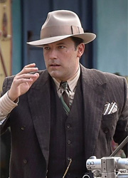
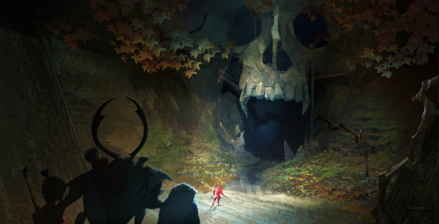
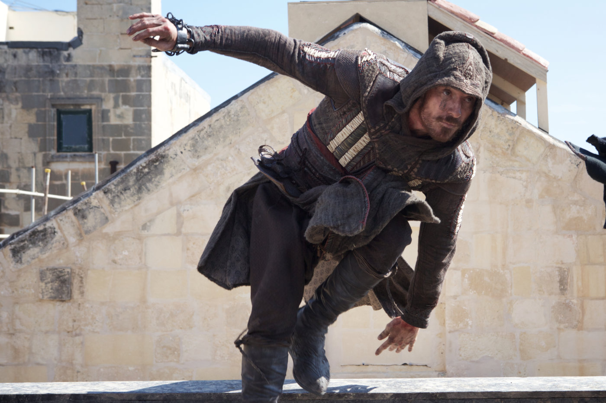
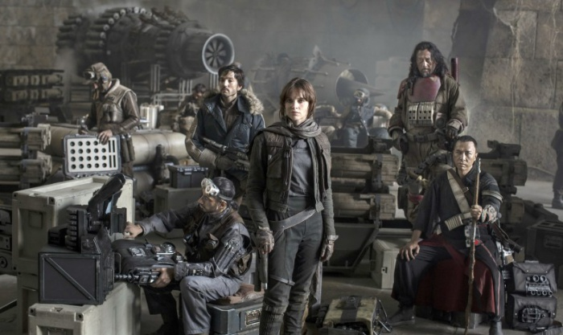

Критики разгромили "Закон ночи" Бена Аффлека

Съемки картины, посвященной обороне Ленинграда, стартовали в декабре 2015 года и должны были завершиться в начале 2017-го. Однако накануне начала съемочного процесса у банка, в котором хранились средства, полученные от Министерства культуры, была отозвана лицензия. По словам продюсеров, деньги со счета им так и не удалось вернуть, в связи с чем было принято решение объявить народный сбор. На сегодняшний день добровольные пожертвования уже составили около 600 000 рублей, однако этих денег не хватает на финальный съемочный блок.
Все неравнодушные к коллизии могут перечислить деньги при помощи ресурса Boomstarter. Не так давно аналогичным способом были собраны деньги на съемки другого патриотического фильма, «28 панфиловцев». В тот раз с помощью народных пожертвований продюсерам удалось получить более 34 млн рублей, а впоследствии получить неплохие сборы в прокате и признание от общественных организаций.
В основе сюжета картины «Коридор бессмертия» — строительство Шлиссенбургской магистрали, по которой в осажденный Ленинград удавалось передавать боеприпасы и продовольствие. Постановщиком драмы является Федор Попов («Четыре таксиста и собака»).
Лучшие спецэффекты: шорт-лист Американской киноакадемии

Американская киноакадемия выделила десять потенциальных претендентов на премию «Оскар» в номинации «Лучшие спецэффекты». Киновселенная Marvel выигрывает у конкурентов из DC Comics: «Доктор Стрэндж» и «Первый мститель: Противостояние» в топ-10 попали, а «Отряд самоубийц» и «Бэтмен против Супермена: На заре справедливости» оказались за пределами десятки лучших.
Помимо двух «марвеловских» блокбастеров в шорт-лист попали: «Прибытие», «Глубоководный горизонт», «Большой и добрый великан», «Пассажиры», «Книга джунглей», «Изгой-Один: звездные войны. Истории», «Фантастические твари и где они обитают» и главный сюрприз списка — «Кубо. Легенда о самурае». Мультфильмов в этой номинации не было с 1993 года.
Интересно взглянуть на тех, кто сошел с дистанции в борьбе за «Оскар». Список получился не менее представительный: два фильма киновселенной DC плюс два проекта киновселенной «Люди Икс» («Апокалипсис» и «Дэдпул»), «Алиса в Зазеркалье», «Стартрек: Бесконечность», «Дом странных детей мисс Перегрин», «Варкрафт» и «Чудо на Гудзоне» и «День независимости: Возрождение».
Опыт тамилиеров

20th Century Fox поделились очередным промо-роликом фантастического экшена «Кредо убийцы» с участием Майкла Фассбендера, снятого по мотивам культовой игровой франшизы Assassin’s Creed.
Закоренелый преступник Каллум Линч (Фассбендер) оказывается спасён от казни таинственной корпорацией Abstergo Industries, являющейся современной реинкарнацией ордена тамплиеров. Теперь он вынужден стать частью проекта под названием Анимус. При помощи специальных технологий Каллум высвобождает генетическую память своего предка, ассасина Агилара из Испании XV века. Чем дольше Линч переживает воспоминания своего предка, тем больше опыта и навыков он приобретает для противостояния тамплиерам, извечным врагам ассасинов.
Режиссером ленты выступил Джастин Курзель, адаптированный сценарий написали Билл Колладж и Адам Купер. В экранизации знаменитой игры мы увидим также Марион Котийяр, Майкла К. Уильямса, Джереми Айронса, Шарлотту Рэмплинг и Брендана Глисона.
В российский прокат «Кредо убийцы» попадет 5 января.
Раскрыт альтернативный финал фильма «Изгой-один. Звёздные войны

Гарет Эдварс, которого студия Disney наняла для постановки картины «Изгой-один. Звездные войны: Истории», объяснил, что его сценарий изначально не предусматривал счастливого финала, ведь ему приходилось придерживаться существующих сюжетных ограничений. Так как Джин Эрсо и Кассиана Эндора не было в «Новой надежде», они не могли выжить в «Изгое-один». Но из-за возникших сомнений в том, что руководство студии позволит поступить с главными героями именно так, был написан иной вариант концовки фильма.
Хронологически события фильма «Изгой-один. Звёздные войны: Истории» происходят после событий, описанных в картине «Звёздные войны: Эпизод III. Месть Ситхов», но до событий картины «Звёздные войны: Эпизод IV. Новая надежда». В центре сюжета «Изгоя-один» находится история Джин Эрсо – член отряда Повстанцев, которому предстоит выкрасть чертежи имперского супероружия, получившего название «Звезда смерти».
Хронологически события фильма «Изгой-один. Звёздные войны: Истории» происходят после событий, описанных в картине «Звёздные войны: Эпизод III. Месть Ситхов», но до событий картины «Звёздные войны: Эпизод IV. Новая надежда». В центре сюжета «Изгоя-один» находится история Джин Эрсо – член отряда Повстанцев, которому предстоит выкрасть чертежи имперского супероружия, получившего название «Звезда смерти».